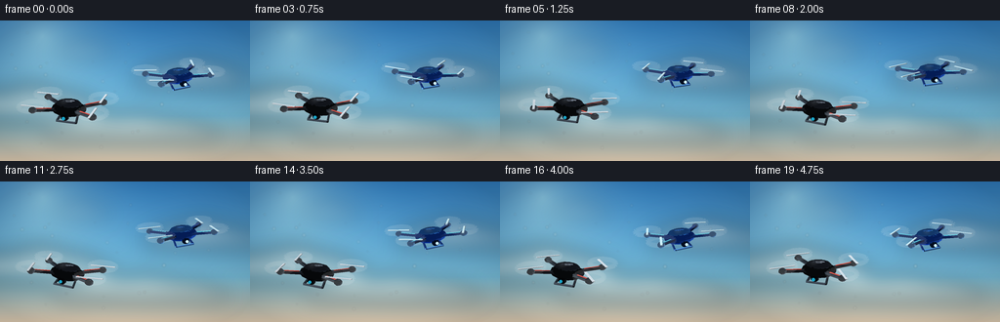
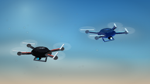
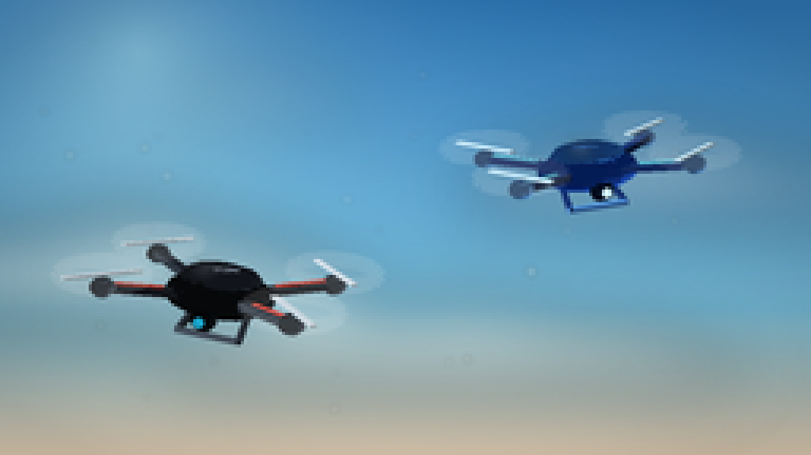
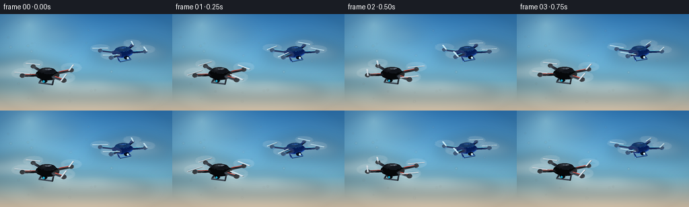

CODING AGENTS AS PIXEL WORLD MODELS
traex/DeepSeek-V4.1-Flash · instance_preservation_0043
点击播放 · 原生 RGB 像素
逐轮保存的候选
回放视频、检查图与代码变化。
每份候选均可单独播放。实际图片检查记录在下方工具轨迹中。
候选 01播放与检查图
点击播放 · 原生 RGB 像素

展开代码变化
--- 上一保存版本
+++ 本次保存版本
@@ -0,0 +1,499 @@
+from __future__ import annotations
+
+import math
+from pathlib import Path
+
+import numpy as np
+from PIL import Image, ImageDraw, ImageFilter
+
+import artifact_io
+
+
+WIDTH = 256
+HEIGHT = 144
+FRAMES = 20
+FPS = 4.0
+SS = 4
+W = WIDTH * SS
+H = HEIGHT * SS
+CASE_DIR = Path(__file__).resolve().parent
+
+
+def unit(v: np.ndarray) -> np.ndarray:
+ n = float(np.linalg.norm(v))
+ return v / max(n, 1e-8)
+
+
+def rot_x(v: np.ndarray, angle: float) -> np.ndarray:
+ c, s = math.cos(angle), math.sin(angle)
+ return np.array((v[0], c * v[1] - s * v[2], s * v[1] + c * v[2]))
+
+
+def rot_y(v: np.ndarray, angle: float) -> np.ndarray:
+ c, s = math.cos(angle), math.sin(angle)
+ return np.array((c * v[0] + s * v[2], v[1], -s * v[0] + c * v[2]))
+
+
+def rot_z(v: np.ndarray, angle: float) -> np.ndarray:
+ c, s = math.cos(angle), math.sin(angle)
+ return np.array((c * v[0] - s * v[1], s * v[0] + c * v[1], v[2]))
+
+
+def pose_point(
+ p: np.ndarray,
+ center: tuple[float, float],
+ scale: float,
+ yaw: float,
+ pitch: float,
+ roll: float,
+) -> tuple[tuple[float, float], float, np.ndarray]:
+ v = np.asarray(p, dtype=float)
+ v = rot_y(v, yaw)
+ v = rot_x(v, pitch)
+ v = rot_z(v, roll)
+
+ elevation = math.radians(19.0)
+ ce, se = math.cos(elevation), math.sin(elevation)
+ y_cam = v[1] * ce - v[2] * se
+ z_cam = v[1] * se + v[2] * ce
+ perspective = 7.4 / (7.4 - z_cam)
+ x = center[0] * SS + v[0] * scale * SS * perspective
+ y = center[1] * SS - y_cam * scale * SS * perspective
+ return (x, y), z_cam, v
+
+
+def shade(
+ base: tuple[int, int, int],
+ normal: np.ndarray,
+ rim_color: tuple[int, int, int] | None = None,
+) -> tuple[int, int, int, int]:
+ n = unit(normal)
+ light = unit(np.array((-0.50, 0.78, 0.42)))
+ view = np.array((0.0, 0.0, 1.0))
+ half = unit(light + view)
+ diffuse = max(0.0, float(np.dot(n, light)))
+ specular = max(0.0, float(np.dot(n, half))) ** 28
+ color = np.array(base, dtype=float)
+ color = color * (0.43 + 0.72 * diffuse) + 255.0 * 0.38 * specular
+
+ if rim_color is not None:
+ rim = max(0.0, float(np.dot(n, unit(np.array((-0.95, 0.35, 0.12))))))
+ color += np.array(rim_color, dtype=float) * (0.20 * rim**2)
+ return tuple(int(x) for x in np.clip(color, 0, 255)) + (255,)
+
+
+def ellipsoid_mesh(
+ center: tuple[float, float, float],
+ radii: tuple[float, float, float],
+ segments: int = 14,
+ rings: int = 7,
+) -> tuple[list[np.ndarray], list[tuple[int, ...]]]:
+ vertices = []
+ for ring in range(rings + 1):
+ lat = -math.pi / 2 + math.pi * ring / rings
+ for seg in range(segments):
+ lon = 2 * math.pi * seg / segments
+ vertices.append(
+ np.array(
+ (
+ center[0] + radii[0] * math.cos(lat) * math.cos(lon),
+ center[1] + radii[1] * math.sin(lat),
+ center[2] + radii[2] * math.cos(lat) * math.sin(lon),
+ )
+ )
+ )
+
+ faces = []
+ for ring in range(rings):
+ for seg in range(segments):
+ a = ring * segments + seg
+ b = ring * segments + (seg + 1) % segments
+ c = (ring + 1) * segments + (seg + 1) % segments
+ d = (ring + 1) * segments + seg
+ if ring != rings - 1:
+ faces.append((a, b, c))
+ if ring != 0:
+ faces.append((a, c, d))
+ return vertices, faces
+
+
+def beam_mesh(
+ p1: np.ndarray,
+ p2: np.ndarray,
+ width: float,
+ height: float,
+) -> tuple[list[np.ndarray], list[tuple[int, ...]]]:
+ p1 = np.asarray(p1, dtype=float)
+ p2 = np.asarray(p2, dtype=float)
+ direction = unit(p2 - p1)
+ up = np.array((0.0, 1.0, 0.0))
+ side = unit(np.cross(direction, up))
+ if np.linalg.norm(side) < 0.1:
+ side = np.array((1.0, 0.0, 0.0))
+ vertical = unit(np.cross(side, direction))
+ offsets = []
+ for sv, hv in ((-1, -1), (1, -1), (1, 1), (-1, 1)):
+ offsets.append(side * (sv * width / 2) + vertical * (hv * height / 2))
+ vertices = [p1 + o for o in offsets] + [p2 + o for o in offsets]
+ faces = [
+ (0, 1, 2, 3),
+ (7, 6, 5, 4),
+ (0, 4, 5, 1),
+ (1, 5, 6, 2),
+ (2, 6, 7, 3),
+ (3, 7, 4, 0),
+ ]
+ return vertices, faces
+
+
+def add_part(
+ faces_out: list[dict],
+ vertices: list[np.ndarray],
+ faces: list[tuple[int, ...]],
+ color: tuple[int, int, int],
+ *,
+ center: tuple[float, float],
+ scale: float,
+ yaw: float,
+ pitch: float,
+ roll: float,
+ rim: tuple[int, int, int] | None = None,
+) -> None:
+ projected = []
+ transformed = []
+ depths = []
+ for vertex in vertices:
+ point, depth, v = pose_point(vertex, center, scale, yaw, pitch, roll)
+ projected.append(point)
+ transformed.append(v)
+ depths.append(depth)
+
+ for face in faces:
+ p0, p1, p2 = transformed[face[0]], transformed[face[1]], transformed[face[2]]
+ normal = np.cross(p1 - p0, p2 - p0)
+ if np.linalg.norm(normal) < 1e-8:
+ continue
+ faces_out.append(
+ {
+ "depth": float(np.mean([depths[i] for i in face])),
+ "points": [projected[i] for i in face],
+ "fill": shade(color, normal, rim),
+ }
+ )
+
+
+def project_local(
+ p: tuple[float, float, float],
+ center: tuple[float, float],
+ scale: float,
+ yaw: float,
+ pitch: float,
+ roll: float,
+) -> tuple[float, float]:
+ return pose_point(np.array(p), center, scale, yaw, pitch, roll)[0]
+
+
+def draw_drone(
+ image: Image.Image,
+ center: tuple[float, float],
+ scale: float,
+ yaw: float,
+ pitch: float,
+ roll: float,
+ phase: float,
+ black: bool,
+) -> None:
+ draw = ImageDraw.Draw(image, "RGBA")
+ faces_out: list[dict] = []
+ rotor_positions = [
+ (-0.66, 0.045, 0.41),
+ (0.66, 0.045, 0.41),
+ (-0.66, 0.045, -0.41),
+ (0.66, 0.045, -0.41),
+ ]
+
+ if black:
+ body = (18, 21, 27)
+ canopy = (43, 51, 64)
+ arm = (31, 36, 44)
+ motor = (71, 82, 95)
+ accent = (218, 63, 48)
+ rim = (165, 205, 230)
+ lens = (27, 172, 210)
+ else:
+ body = (13, 68, 205)
+ canopy = (45, 133, 255)
+ arm = (18, 45, 111)
+ motor = (80, 151, 235)
+ accent = (94, 232, 255)
+ rim = (177, 238, 255)
+ lens = (210, 245, 255)
+
+ # Carbon arms with a colored inset rail.
+ for x, _, z in rotor_positions:
+ anchor = np.array((0.22 if x > 0 else -0.22, -0.005, 0.13 if z > 0 else -0.13))
+ end = np.array((x, 0.045, z))
+ vertices, faces = beam_mesh(anchor, end, 0.072, 0.052)
+ add_part(
+ faces_out, vertices, faces, arm,
+ center=center, scale=scale, yaw=yaw, pitch=pitch, roll=roll, rim=rim,
+ )
+ rail_start = anchor + (end - anchor) * 0.23 + np.array((0, 0.035, 0))
+ rail_end = anchor + (end - anchor) * 0.88 + np.array((0, 0.035, 0))
+ vertices, faces = beam_mesh(rail_start, rail_end, 0.027, 0.010)
+ add_part(
+ faces_out, vertices, faces, accent,
+ center=center, scale=scale, yaw=yaw, pitch=pitch, roll=roll, rim=rim,
+ )
+
+ # Main shell, upper canopy, and a darker underside.
+ vertices, faces = ellipsoid_mesh((0.0, -0.015, 0.0), (0.39, 0.145, 0.285), 16, 8)
+ add_part(
+ faces_out, vertices, faces, body,
+ center=center, scale=scale, yaw=yaw, pitch=pitch, roll=roll, rim=rim,
+ )
+ vertices, faces = ellipsoid_mesh((0.0, 0.102, -0.015), (0.285, 0.082, 0.205), 15, 6)
+ add_part(
+ faces_out, vertices, faces, canopy,
+ center=center, scale=scale, yaw=yaw, pitch=pitch, roll=roll, rim=rim,
+ )
+
+ # Motor housings and landing skids.
+ for x, y, z in rotor_positions:
+ vertices, faces = ellipsoid_mesh((x, y, z), (0.087, 0.065, 0.087), 10, 5)
+ add_part(
+ faces_out, vertices, faces, motor,
+ center=center, scale=scale, yaw=yaw, pitch=pitch, roll=roll, rim=rim,
+ )
+ for x in (-0.18, 0.18):
+ vertices, faces = beam_mesh(
+ np.array((x, -0.12, -0.12)),
+ np.array((x * 1.22, -0.25, 0.17)),
+ 0.034,
+ 0.034,
+ )
+ add_part(
+ faces_out, vertices, faces, arm,
+ center=center, scale=scale, yaw=yaw, pitch=pitch, roll=roll, rim=rim,
+ )
+ vertices, faces = beam_mesh(
+ np.array((-0.23, -0.25, 0.17)),
+ np.array((0.23, -0.25, 0.17)),
+ 0.045,
+ 0.030,
+ )
+ add_part(
+ faces_out, vertices, faces, motor,
+ center=center, scale=scale, yaw=yaw, pitch=pitch, roll=roll, rim=rim,
+ )
+
+ # Small forward camera pod and its bright glass.
+ vertices, faces = ellipsoid_mesh((0.0, -0.105, 0.245), (0.092, 0.082, 0.085), 10, 5)
+ add_part(
+ faces_out, vertices, faces, (10, 13, 18) if black else (9, 31, 74),
+ center=center, scale=scale, yaw=yaw, pitch=pitch, roll=roll, rim=rim,
+ )
+
+ # Rotor blades are included in the depth-sorted mesh.
+ for index, (x, y, z) in enumerate(rotor_positions):
+ blade_angle = phase * 2.75 + index * math.pi / 2
+ direction = np.array((math.cos(blade_angle), 0.0, math.sin(blade_angle)))
+ hub = np.array((x, y + 0.090, z))
+ for side in (-1.0, 1.0):
+ end = hub + direction * (0.265 * side)
+ vertices, faces = beam_mesh(hub, end, 0.045, 0.011)
+ add_part(
+ faces_out, vertices, faces, (210, 221, 229) if black else (201, 238, 255),
+ center=center, scale=scale, yaw=yaw, pitch=pitch, roll=roll, rim=rim,
+ )
+
+ # Back-to-front painter's algorithm for the little 3D model.
+ for face in sorted(faces_out, key=lambda item: item["depth"]):
+ draw.polygon(face["points"], fill=face["fill"])
+
+ # Motion-blurred rotor discs, drawn at their correct local locations.
+ disc_layer = Image.new("RGBA", image.size, (0, 0, 0, 0))
+ disc_draw = ImageDraw.Draw(disc_layer, "RGBA")
+ for index, (x, y, z) in enumerate(rotor_positions):
+ points = []
+ for step in range(48):
+ angle = 2 * math.pi * step / 48
+ local = np.array(
+ (
+ x + 0.285 * math.cos(angle),
+ y + 0.092,
+ z + 0.285 * math.sin(angle),
+ )
+ )
+ points.append(project_local(local, center, scale, yaw, pitch, roll))
+ disc_draw.polygon(points, fill=(218, 240, 255, 18))
+ disc_draw.line(points + [points[0]], fill=(238, 249, 255, 78), width=2 * SS)
+ disc_draw.line(points + [points[0]], fill=(255, 255, 255, 32), width=5 * SS)
+ image.alpha_composite(disc_layer)
+
+ # Fine glass glints give the black shell readable highlights.
+ glint_layer = Image.new("RGBA", image.size, (0, 0, 0, 0))
+ glint_draw = ImageDraw.Draw(glint_layer, "RGBA")
+ glint = project_local((-0.085, 0.168, 0.075), center, scale, yaw, pitch, roll)
+ radius = max(1.2, scale * 0.065) * SS
+ glint_draw.ellipse(
+ (glint[0] - radius * 1.6, glint[1] - radius * 0.55,
+ glint[0] + radius * 1.6, glint[1] + radius * 0.55),
+ fill=(236, 250, 255, 100 if black else 125),
+ )
+ glint_layer = glint_layer.filter(ImageFilter.GaussianBlur(2.2 * SS))
+ image.alpha_composite(glint_layer)
+
+ lens_point = project_local((0.0, -0.105, 0.329), center, scale, yaw, pitch, roll)
+ draw.ellipse(
+ (lens_point[0] - 0.035 * scale * SS, lens_point[1] - 0.035 * scale * SS,
+ lens_point[0] + 0.035 * scale * SS, lens_point[1] + 0.035 * scale * SS),
+ fill=lens + (230,),
+ )
+
+
+def cloud_band(
+ draw: ImageDraw.ImageDraw,
+ x: float,
+ y: float,
+ width: float,
+ height: float,
+ alpha: int,
+ color: tuple[int, int, int],
+) -> None:
+ blobs = [
+ (-0.38, 0.10, 0.36, 0.46),
+ (-0.20, -0.02, 0.42, 0.66),
+ (0.02, -0.11, 0.48, 0.78),
+ (0.25, 0.00, 0.43, 0.62),
+ (0.42, 0.13, 0.32, 0.42),
+ (0.02, 0.18, 0.78, 0.34),
+ ]
+ for bx, by, bw, bh in blobs:
+ draw.ellipse(
+ (
+ x + (bx - bw / 2) * width,
+ y + (by - bh / 2) * height,
+ x + (bx + bw / 2) * width,
+ y + (by + bh / 2) * height,
+ ),
+ fill=color + (alpha,),
+ )
+
+
+def background(frame_index: int) -> Image.Image:
+ t = frame_index / (FRAMES - 1)
+ yy = np.linspace(0.0, 1.0, H, dtype=np.float32)[:, None]
+ top = np.array((49, 127, 194), dtype=np.float32)
+ middle = np.array((126, 196, 223), dtype=np.float32)
+ bottom = np.array((237, 216, 187), dtype=np.float32)
+ blend = np.clip(yy / 0.72, 0, 1)
+ gradient = top[None, None, :] * (1 - blend[:, :, None]) + middle[None, None, :] * blend[:, :, None]
+ lower = np.clip((yy - 0.68) / 0.32, 0, 1)
+ gradient = gradient * (1 - lower[:, :, None]) + bottom[None, None, :] * lower[:, :, None]
+ array = np.repeat(gradient, W, axis=1)
+
+ # A soft sun source just above the left horizon.
+ gy, gx = np.mgrid[0:H, 0:W].astype(np.float32)
+ sx, sy = W * 0.17, H * 0.11
+ radius = np.sqrt((gx - sx) ** 2 + (gy - sy) ** 2)
+ glow = np.clip(1.0 - radius / (W * 0.56), 0, 1) ** 2.6
+ array += np.array((76, 62, 31), dtype=np.float32)[None, None, :] * glow[:, :, None]
+ image = Image.fromarray(np.clip(array, 0, 255).astype(np.uint8), "RGB").convert("RGBA")
+
+ # Far cloud shadows first, then luminous tops. Both drift at different rates.
+ cloud_layer = Image.new("RGBA", (W, H), (0, 0, 0, 0))
+ cloud_draw = ImageDraw.Draw(cloud_layer, "RGBA")
+ drift_far = int(t * 8 * SS)
+ drift_near = int(t * 17 * SS)
+ cloud_band(cloud_draw, W * 0.12 + drift_far, H * 0.66, W * 0.55, H * 0.30, 40, (111, 144, 166))
+ cloud_band(cloud_draw, W * 0.77 + drift_far, H * 0.43, W * 0.43, H * 0.25, 34, (118, 151, 174))
+ cloud_band(cloud_draw, W * 0.57 + drift_far, H * 0.80, W * 0.66, H * 0.26, 30, (130, 157, 174))
+ cloud_layer = cloud_layer.filter(ImageFilter.GaussianBlur(16 * SS))
+ image.alpha_composite(cloud_layer)
+
+ cloud_layer = Image.new("RGBA", (W, H), (0, 0, 0, 0))
+ cloud_draw = ImageDraw.Draw(cloud_layer, "RGBA")
+ cloud_band(cloud_draw, W * 0.12 + drift_near, H * 0.61, W * 0.52, H * 0.28, 112, (250, 244, 231))
+ cloud_band(cloud_draw, W * 0.76 + drift_near, H * 0.39, W * 0.39, H * 0.21, 100, (249, 244, 236))
+ cloud_band(cloud_draw, W * 0.52 + drift_near, H * 0.78, W * 0.62, H * 0.23, 95, (255, 247, 233))
+ cloud_band(cloud_draw, W * 0.34 - drift_far, H * 0.22, W * 0.22, H * 0.12, 55, (242, 247, 247))
+ cloud_layer = cloud_layer.filter(ImageFilter.GaussianBlur(10 * SS))
+ image.alpha_composite(cloud_layer)
+
+ # Very light atmospheric haze near the bottom keeps the open-air feel.
+ haze = Image.new("RGBA", (W, H), (0, 0, 0, 0))
+ haze_draw = ImageDraw.Draw(haze, "RGBA")
+ haze_draw.rectangle((0, int(H * 0.82), W, H), fill=(247, 230, 208, 34))
+ haze = haze.filter(ImageFilter.GaussianBlur(14 * SS))
+ image.alpha_composite(haze)
+ return image
+
+
+def add_air_particles(image: Image.Image, frame_index: int) -> None:
+ layer = Image.new("RGBA", image.size, (0, 0, 0, 0))
+ draw = ImageDraw.Draw(layer, "RGBA")
+ rng = np.random.default_rng(814)
+ for index in range(28):
+ bx = rng.uniform(0.02, 0.98)
+ by = rng.uniform(0.08, 0.92)
+ size = rng.uniform(0.5, 1.7)
+ alpha = int(rng.uniform(18, 55))
+ x = (bx + frame_index * 0.0008 * (index % 3 + 1)) * W
+ y = (by + 0.005 * math.sin(frame_index * 0.55 + index)) * H
+ draw.ellipse((x - size * SS, y - size * SS, x + size * SS, y + size * SS), fill=(255, 251, 238, alpha))
+ image.alpha_composite(layer.filter(ImageFilter.GaussianBlur(0.7 * SS)))
+
+
+def make_frame(frame_index: int) -> np.ndarray:
+ t = frame_index / (FRAMES - 1)
+ image = background(frame_index)
+ add_air_particles(image, frame_index)
+
+ # Gentle independent hover cycles and a slight camera-side drift.
+ black_center = (
+ 70.0 + 1.8 * math.sin(2 * math.pi * t + 0.2),
+ 91.0 - 2.5 * math.sin(2 * math.pi * t + 0.5),
+ )
+ blue_center = (
+ 184.0 - 2.0 * math.sin(2 * math.pi * t + 0.9),
+ 55.0 + 2.1 * math.sin(2 * math.pi * t + 1.7),
+ )
+ black_yaw = math.radians(-22.0 + 3.2 * math.sin(2 * math.pi * t + 0.4))
+ black_pitch = math.radians(2.5 + 1.4 * math.sin(2 * math.pi * t + 1.1))
+ black_roll = math.radians(2.3 * math.sin(2 * math.pi * t + 1.4))
+ blue_yaw = math.radians(27.0 + 4.5 * math.sin(2 * math.pi * t + 1.0))
+ blue_pitch = math.radians(-1.5 + 1.2 * math.sin(2 * math.pi * t + 2.2))
+ blue_roll = math.radians(-3.2 * math.sin(2 * math.pi * t + 0.2))
+
+ draw_drone(
+ image, black_center, 47.5,
+ black_yaw, black_pitch, black_roll,
+ phase=frame_index * 0.77,
+ black=True,
+ )
+ draw_drone(
+ image, blue_center, 43.0,
+ blue_yaw, blue_pitch, blue_roll,
+ phase=frame_index * 0.82 + 1.3,
+ black=False,
+ )
+
+ # Subtle cinematic vignette.
+ yy, xx = np.mgrid[0:H, 0:W].astype(np.float32)
+ nx = (xx / W - 0.5) * 2
+ ny = (yy / H - 0.5) * 2
+ vignette = np.clip(1.0 - 0.115 * (nx * nx + ny * ny), 0.82, 1.0)
+ rgb = np.asarray(image.convert("RGB"), dtype=np.float32) * vignette[:, :, None]
+ image = Image.fromarray(np.clip(rgb, 0, 255).astype(np.uint8), "RGB")
+ image = image.resize((WIDTH, HEIGHT), Image.Resampling.LANCZOS)
+ return np.asarray(image, dtype=np.uint8)
+
+
+def main() -> None:
+ frames = np.stack([make_frame(i) for i in range(FRAMES)])
+ artifact_io.save(frames, CASE_DIR)
+
+
+if __name__ == "__main__":
+ main()
可观测工具轨迹
实际执行的命令与返回图片。
命令 1exit 0
/bin/bash -c "pwd && rg --files -g '"'!*__pycache__*'"' | sed -n '1,200p'"
命令 2exit 0
/bin/bash -c "printf '%s\\n' '--- prompt.txt ---'; sed -n '1,240p' prompt.txt; printf '%s\\n' '--- GENERATION_RULES.md ---'; sed -n '1,280p' GENERATION_RULES.md; printf '%s\\n' '--- task_spec.json ---'; cat task_spec.json"
命令 3exit 0
/bin/bash -c "sed -n '1,280p' artifact_io.py"
命令 4exit 0
/bin/bash -c "sed -n '1,260p' player_template.html"
命令 5exit 0
/bin/bash -c "python - <<'PY'
import PIL, numpy
print('PIL', PIL.__version__)
print('numpy', numpy.__version__)
PY
command -v ffmpeg || true
command -v ffprobe || true"命令 6exit 0
/bin/bash -c 'python generate.py'
命令 7exit 0
/bin/bash -c "python - <<'PY'
from PIL import Image
import numpy as np
for i in [0,5,10,15,19]:
a=np.asarray(Image.open(f'frames/{i:02d}.png'))
print(i, a.shape, a.dtype, a.mean(axis=(0,1)).round(1), a.min(), a.max())
PY
ls -lh pixels.npz index.html inspection.png frames | sed -n '1,30p'"命令 8exit 0
/bin/bash -c "python - <<'PY'
from PIL import Image, ImageChops
import numpy as np
ims=[np.asarray(Image.open(f'frames/{i:02d}.png')).astype(np.int16) for i in range(20)]
for i in range(1,20):
d=np.abs(ims[i]-ims[i-1])
print(i, 'mean', round(float(d.mean()),3), 'changed%', round(float((d.max(axis=2)>5).mean()*100),2), 'max', int(d.max()))
PY"命令 9exit 0
/bin/bash -c "python - <<'PY'
from PIL import Image
import numpy as np
for i in [0,10,19]:
im=Image.open(f'frames/{i:02d}.png').resize((1024,576),Image.Resampling.NEAREST)
im.save(f'.tmp/detail_{i:02d}.png')
PY"命令 10exit 0
/bin/bash -c "python - <<'PY'
from PIL import Image
import numpy as np
# Per-frame bounding box of dark and blue drone pixels, as a sanity check for stable subjects.
for i in [0,5,10,15,19]:
a=np.asarray(Image.open(f'frames/{i:02d}.png')).astype(int)
dark=(a.max(axis=2)<75)
blue=(a[:,:,2]>a[:,:,0]+25)&(a[:,:,2]>a[:,:,1]+10)&(a[:,:,2]>70)
print(f'{i:02d}', 'dark', int(dark.sum()), 'blue', int(blue.sum()))
PY
find . -maxdepth 2 -type f -printf '%p %s\\n' | sort | sed -n '1,80p'"视觉工具实际返回图片 1

视觉工具实际返回图片 2

视觉工具实际返回图片 3

视觉工具实际返回图片 4

保存候选 1 份；完成命令 10 次；可验证图片返回 4 张。原始 API 响应与完整日志保留在本地。